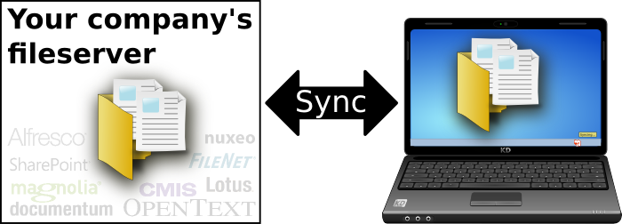
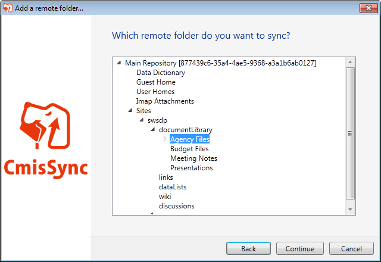
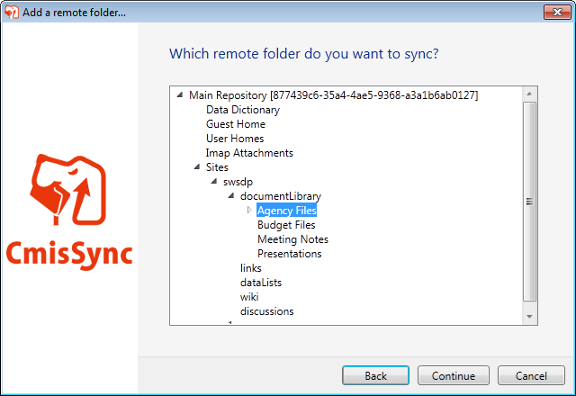

CmisSync vous permet de rester synchronisé avec votre serveur de fichiers, et lire/modifier vos documents même sans connexion Internet:

Besoin de lire un compte-rendu dans l'avion ?
Besoin de vérifier la liste des prix, et pas d'Internet dans la salle de réunion chez le client ?
→ Pas de problème, les derniers fichiers sont déjà sur votre laptop.
Bonus: Vos documents s'ouvre plus vite, pas de latence réseau.
C'est comme un Dropbox pour la GED (Gestion électronique des documents) !
- Vous avez un serveur de fichiers, utilisez-le. Duplication=cauchemar de versions.
- Dropbox est très cher pour les gros volumes.
- Ne confiez pas vos données à des tiers.
→Télécharger← (Disponible sur Windows 7/8. Vista, Mac, Linux en cours de portage)
(.NET Framework 4.5 nécessaire)
Features
- Two-way sync
- Conflict handling
- Easy to install
- Compatible with any CMIS-compliant server
- Open source
Screenshots

 

Tutorials
CmisSync works with any CMIS-compliant server, but we created tutorials for the most populars:
- Offline desktop sync for Alfresco (French, Japanese)
- Offline desktop sync for Nuxeo (French)
- Offline desktop sync for SharePoint
- Offline desktop sync for Google Drive
CmisSync is Open Source, get involved!
CmisSync is Open Source software and licensed under the GNU-GPLv3. You are welcome to change and redistribute it, see the license for details.
CmisSync is currently mostly developed by Aegif, but all contributions are welcome!
Everybody can help:
Testers: Install CmisSync and report bugs,
Developers: Get the source and choose from the issue tracker, thanks a lot!
Anyone: Translate CmisSync into your language. CmisSync is already available in English, French, Japanese, Spanish, Ukrainian.
About CMIS
CMIS (Content Management Interoperability Services) is an OASIS standard that allows any ECM client to communicate with any ECM repository (a bit like the HTML standard allows all web browsers to communicate with all web servers). CMIS is backed by all major content management vendors, and is supported by the following ECM servers: Alfresco, Adobe Experience Manager, EMC Documentum, IBM FileNet, IBM Lotus, eXo Platform, Interwoven, KnowledgeTree, Magnolia, Microsoft SharePoint, NemakiWare, Nuxeo, OpenText and many others.